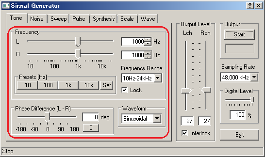
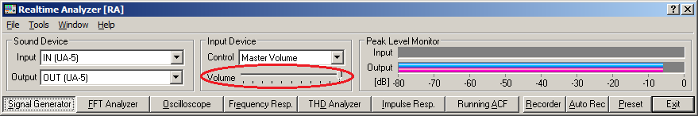
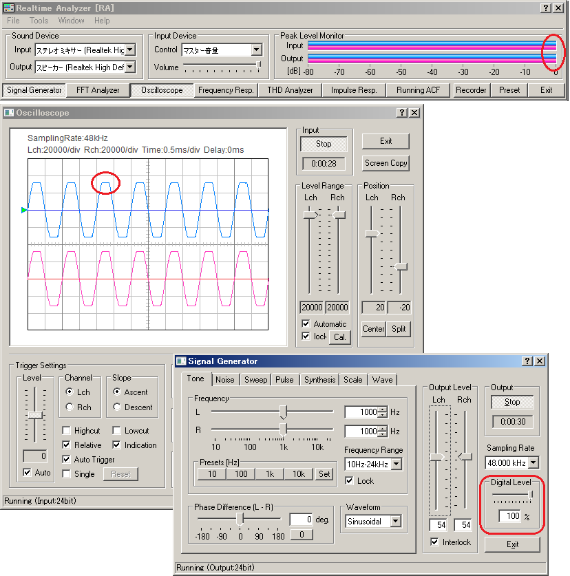
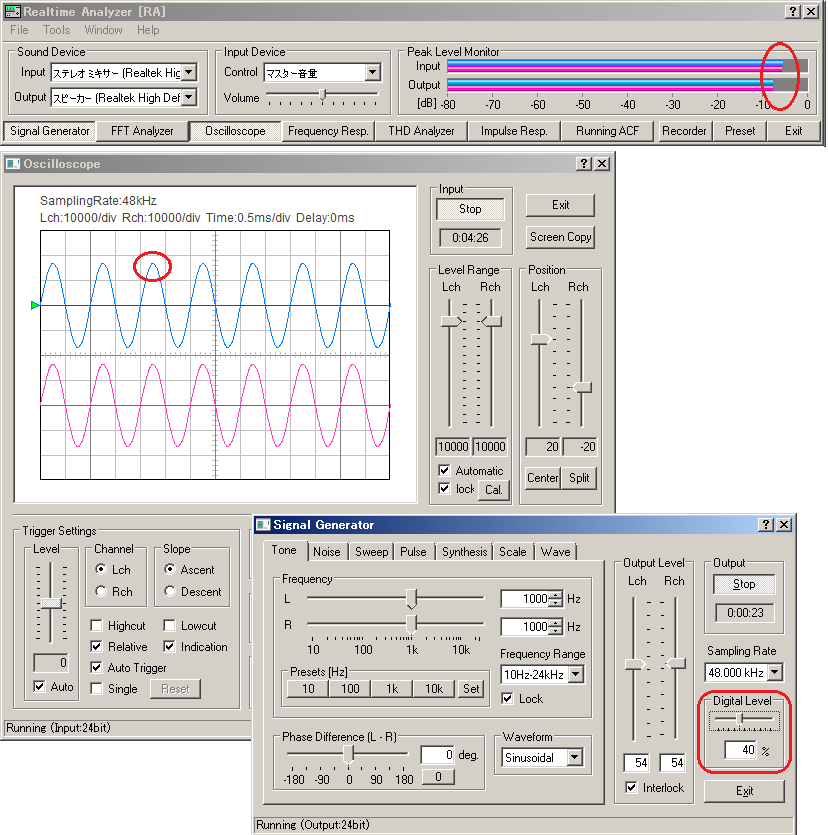

DSSF3 > RA > Operation Guide > Adjustment before a measurement
Volume setting
If you do not check the settings of RA, the output signal of the signal generator may be distorted. Distortion of the test signal is very harmful for the measurement. Correct results never be acquired, and it may break the equipment under test.
In most cases, the most problematic device is the analog amplifier built in the D/A converter. The 16 bit D/A converter transforms the amplitude of the digital signal (1-32767) to the analog signal. But this output signal is distorted in most PCs' sound chip around the maximum output level. To reduce such a distortion, digital volume should be adjusted. Digital volume is called as "Digital Output" in RA as shown in the signal generator.
Decreasing the digital volume suppresses the maximum digital output. A demerit of decreasing the digital volume is that a dynamic range and resolution decrease, but it is far better than the sound is distorted. This is the very important point for the correct sound measurement.
To check a distortion, generate a sine wave in the signal generator (hereinafter referred to as "SG") and observe its waveform by the oscilloscope. A 1 kHz sinusoidal tone is recommended as a test signal.

A test signal generated by the SG (tone, noise, sweep, and pulse) is the digital signal that is called "wave out". To observe the signal by the oscilloscope, select WAVE as the input device. The name of the device depends on the environment (e.g. WAVE, mixer, directsound, and so). The SG only outputs the signal. It does not control the input device. To adjust the input volume, check the peak level monitor (right side in the figure below) and move the Volume slider (left side). Recommended output level is below -5 dB.

In this test, a test signal generated by the SG is converted to analog (by D/A converter), then fed to the oscilloscope via Windows mixer. The whole measurement chain is completed only inside the PC.
When the waveform is collapsed in the oscilloscope, check the volume control on the RA's main window first. If the input volume is too large, the sine wave becomes like a square wave. Next, adjust the Digital Output in SG until the clean sine wave appears. In the oscilloscope, the adjustment result can be seen on time. It tells the proper volume setting more simply than other methods.


DSSF3 > RA > Operation Guide > Adjustment before a measurement